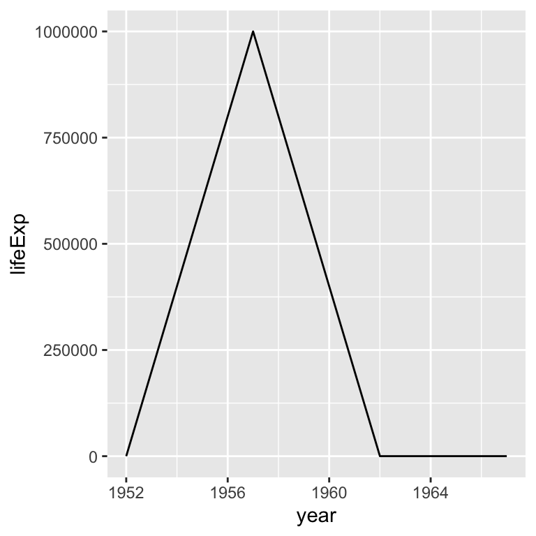
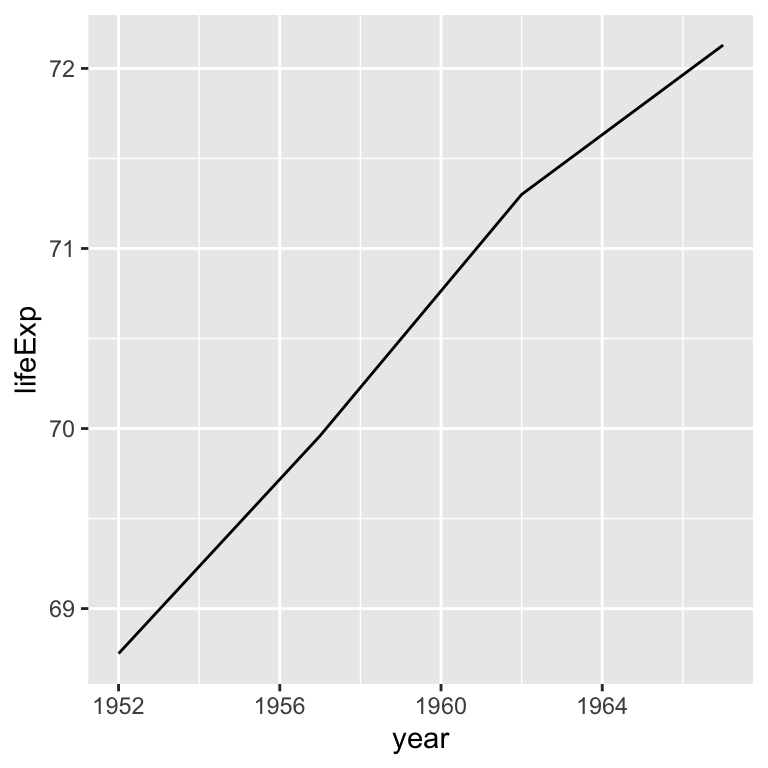
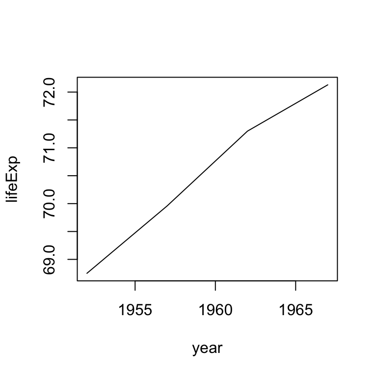
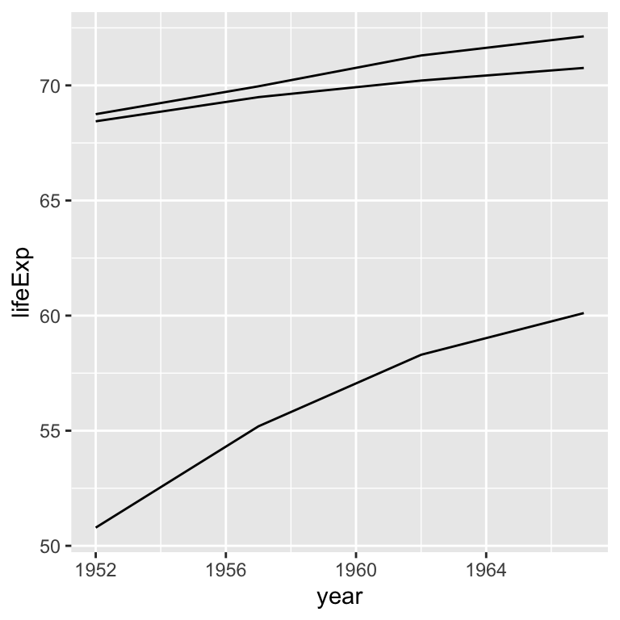
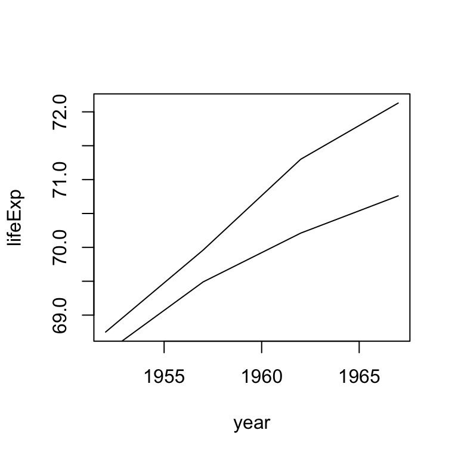
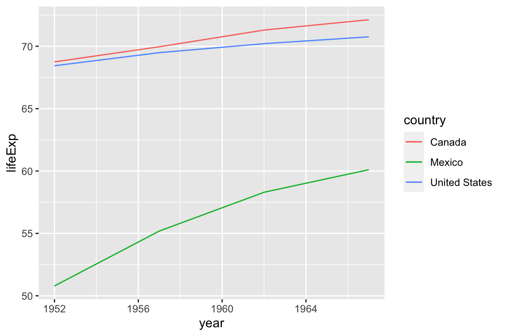

Yumou Qiu
We are asked to :
999999, it should actually be 69.96. Make this correction.Using the gapminder data provided
life5060 <- read.csv("https://raw.githubusercontent.com/ds202-at-isu/materials/master/01_collaborative-environment/data/gapminder-5060.csv")
head(life5060)## country continent year lifeExp pop gdpPercap
## 1 Afghanistan Asia 1952 28.801 8425333 779.4453
## 2 Afghanistan Asia 1957 30.332 9240934 820.8530
## 3 Afghanistan Asia 1962 31.997 10267083 853.1007
## 4 Afghanistan Asia 1967 34.020 11537966 836.1971
## 5 Albania Europe 1952 55.230 1282697 1601.0561
## 6 Albania Europe 1957 59.280 1476505 1942.2842## [1] 568 6## country continent year lifeExp pop gdpPercap
## 1 Canada Americas 1952 68.75 14785584 11367.16
## 2 Canada Americas 1957 999999.00 17010154 12489.95
## 3 Canada Americas 1962 71.30 18985849 13462.49
## 4 Canada Americas 1967 72.13 20819767 16076.59## [1] 4 6## [1] 3## [1] 3## country continent year lifeExp pop gdpPercap
## 81 Canada Americas 1952 68.75 14785584 11367.16
## 82 Canada Americas 1957 999999.00 17010154 12489.95
## 83 Canada Americas 1962 71.30 18985849 13462.49
## 84 Canada Americas 1967 72.13 20819767 16076.59## [1] 4 6Draw a line for the life expectancy in Canada

## country continent year lifeExp pop gdpPercap
## 1 Canada Americas 1957 999999 17010154 12489.95## country continent year lifeExp pop gdpPercap
## 1 Canada Americas 1952 68.75 14785584 11367.16
## 2 Canada Americas 1957 69.96 17010154 12489.95
## 3 Canada Americas 1962 71.30 18985849 13462.49
## 4 Canada Americas 1967 72.13 20819767 16076.59## country continent year lifeExp pop gdpPercap
## 81 Canada Americas 1952 68.75 14785584 11367.16
## 82 Canada Americas 1957 69.96 17010154 12489.95
## 83 Canada Americas 1962 71.30 18985849 13462.49
## 84 Canada Americas 1967 72.13 20819767 16076.59

Add lines for Mexico and the US
canada_fixed %>%
ggplot(aes(x = year, y = lifeExp, group=country)) + geom_line() +
geom_line(data = life5060 %>%
filter(country %in% c("United States", "Mexico")))
plot(x = canada_fixed$year, y = canada_fixed$lifeExp,
type = 'l', xlab = "year", ylab = "lifeExp")
US = life5060[life5060$country == "United States", ]
Mexico = life5060[life5060$country == "Mexico", ]
lines(x = US$year, y = US$lifeExp)
lines(x = Mexico$year, y = Mexico$lifeExp)
Add lines for Mexico and the US, color lines by country and add a legend
canada_fixed %>%
ggplot(aes(x = year, y = lifeExp, colour=country)) + geom_line() +
geom_line(data = life5060 %>%
filter(country %in% c("United States", "Mexico")))
01_collaborative-environment and download the file 02_test-case-solution.Rmd